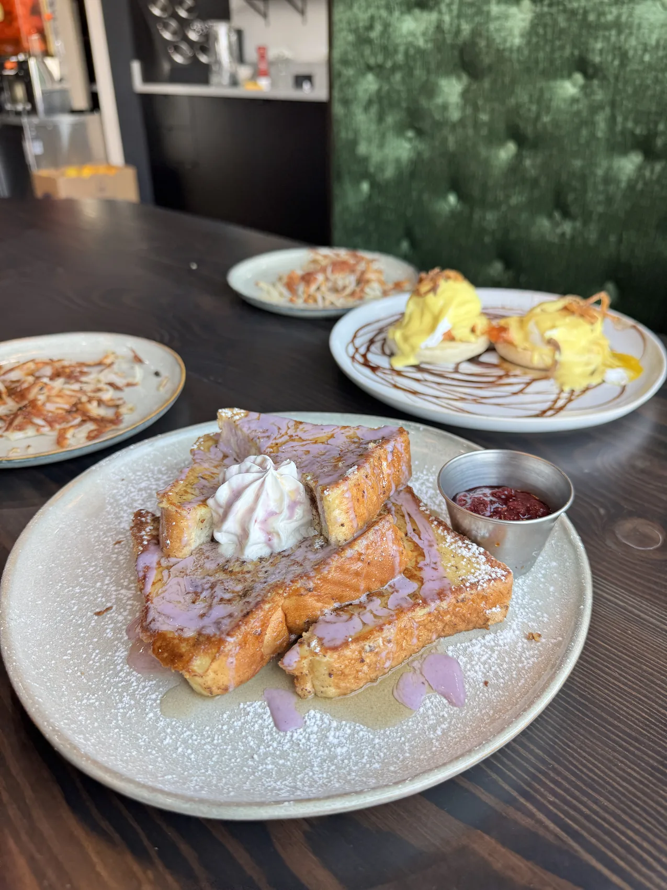

8 AM
Brunch, Daily
bright plates and slow mornings
Brunch starts at 8:00 AM with made-to-order breakfast and lunch: French toast, benedicts, skillets, breakfast burritos, sandwiches, salads, pastries, and coffee.
See the brunch menu